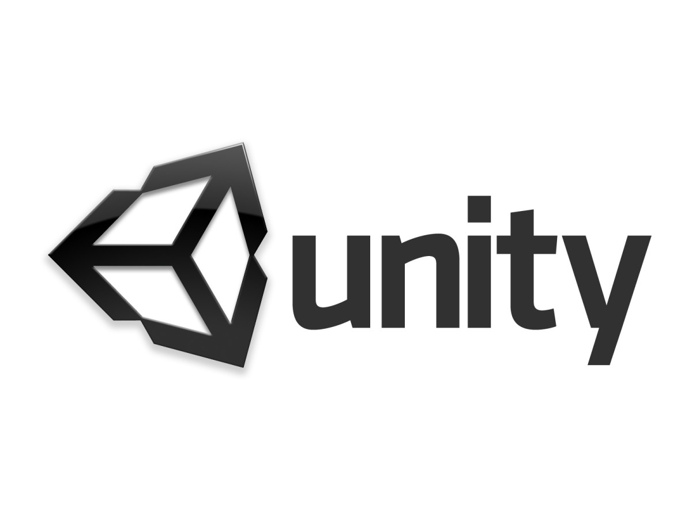
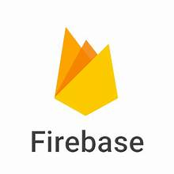
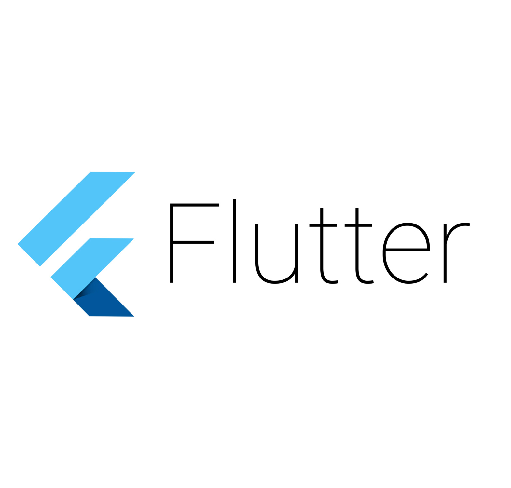
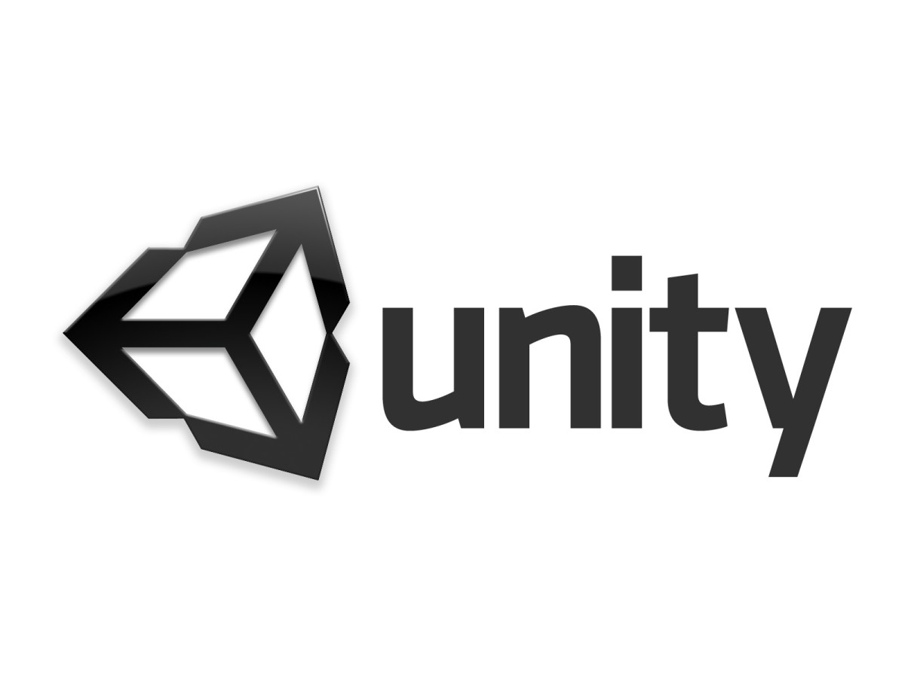
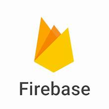
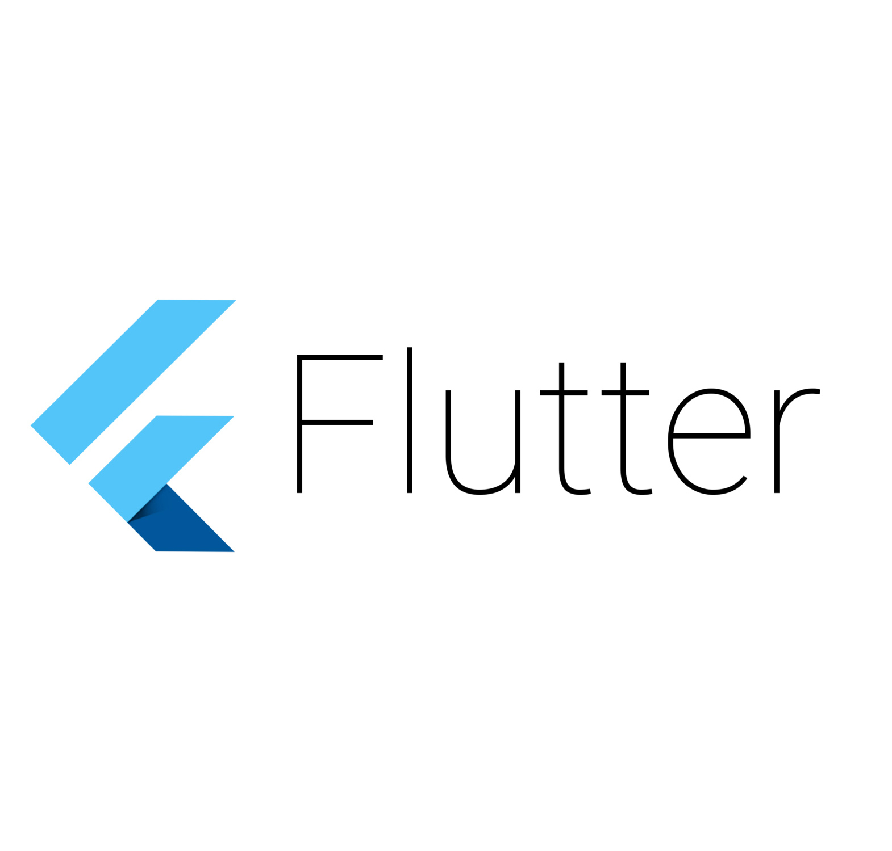

Resume
Education
Villanova University
August 2022 – May 2026
Bachelor of Science: Computer Science
Minors: Cybersecurity, Engineering Entrepreneurship
Activities: St. Thomas of Villanova Day of Service Volunteer, Sports Analytics Club, Programming Team, Villanova Club Baseball, Intramural Sports.
Key Coursework: Algorithms & Data Structures I, Algorithms & Data Structures II, Analysis of Algorithms, Applied Machine Learning, Computer Systems I, Computer Systems II, Computer and Network Security, Design Thinking and Customer Discovery, Digital Forensics, Discrete Structures, Emerging Tech in Product Innovation, Engineering a Creative Mindset, Full Stack Web Dev, Info Security & Protection, Linear Algebra for Computing, Organization of Programming Languages, Overview of Cybersecurity, Personal Finance, Platform Based Computing, Principles of Database Systems, Product & Service Prototyping, Senior Projects, Software Engineering, Statistics for Computing, Theory of Computation.
Work Experience
TRANZACT – Information & Cyber Security Intern
June 2025 – August 2025
- Supported security audits, compliance reviews, and regulatory requirement assessments.
- Helped maintain cybersecurity frameworks and standards including PCI DSS, HIPAA, and NIST 800-53.
- Assisted in third-party vendor risk assessment activities and client due diligence assessments.
- Analyzed and managed remediation plans for cyber threats, vulnerabilities, and security incidents.
- Researched and documented security policies, standards, and procedures.
- Participated in security awareness training initiatives.
- Utilized Archer and various other security tools for governance, compliance, and risk analysis.
- Collaborated with cross-functional teams to support security projects.
Games For Love – Game Developer Intern
June 2024 – September 2024
- Collaborated with a team of interns as the Lead Programmer/Level Designer to develop a multi-level 2D mining game called Culinary Caverns, utilizing Unity Game Engine and C# scripting.
- Programmed various game features including player movement and animation, terrain seed generation, abilities for the player to break and collect blocks, and a dynamic inventory UI system to store and show collected items.
- Implemented background music, sound effects, and level completion cues to enhance the user experience.
- Contributed to game and level design by coordinating and facilitating collaboration between team members through the use of GitHub and Trello, and organizing Discord meetings.
- Created for submission to Games for Love's Jampack to be featured in a charity bundle sold to raise funds to support children in hospitals.
Skills
Programming Languages
Java, JavaScript, C, C#, Python, HTML, CSS, Dart, R, Ruby.
Software Tools and Frameworks
Git, GitHub, Eclipse, Visual Studio Code, Unity Game Engine, React, React Native, Linux/Unix, Firebase, Expo, JSON, JUnit, Bootstrap, Flutter, Android Studio, LucidChart, Trello, WebGL, Jupyter, VirtualBox, SQL, MongoDB, Webflow, Figma, Archer, Splunk, Cyble Vision, Microsoft Defender, FTK Imager, Excel, PowerPoint, Word.
 





Other
Bilingual with Seal of Biliteracy and Proficiency in English and Spanish.